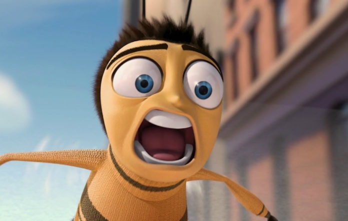
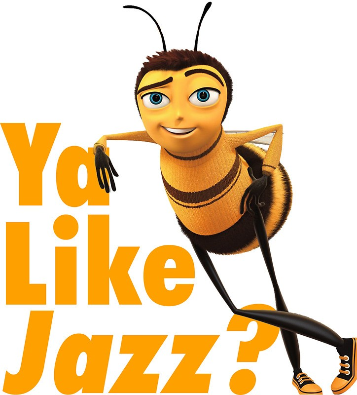

According to all known laws
of aviation,
there is no way a bee
should be able to fly.
Its wings are too small to get
its fat little body off the ground.
The bee, of course, flies anyway
because bees don't care
what humans think is impossible.
Yellow, black. Yellow, black.
Yellow, black. Yellow, black.
Ooh, black and yellow!
Let's shake it up a little.
Barry! Breakfast is ready!
Ooming!
Hang on a second.
Hello?
- Barry?
- Adam?
- Oan you believe this is happening?
- I can't. I'll pick you up.
Looking sharp.
Use the stairs. Your father
paid good money for those.
Sorry. I'm excited.
Here's the graduate.
We're very proud of you, son.
JESUS CHROIST

I HEARD...
A perfect report card, all B's.
Very proud.
Ma! I got a thing going here.
- You got lint on your fuzz.
- Ow! That's me!
- Wave to us! We'll be in row 118,000.
- Bye!
Barry, I told you,
stop flying in the house!
- Hey, Adam.
- Hey, Barry.
- Is that fuzz gel?
- A little. Special day, graduation.
Never thought I'd make it.
Three days grade school,
three days high school.
Those were awkward.
Three days college. I'm glad I took
a day and hitchhiked around the hive.
You did come back different.
- Hi, Barry.
- Artie, growing a mustache? Looks good.
- Hear about Frankie?
- Yeah.
- You going to the funeral?
- No, I'm not going.
Everybody knows,
sting someone, you die.
Don't waste it on a squirrel.
Such a hothead.
I guess he could have
just gotten out of the way.
I love this incorporating
an amusement park into our day.
That's why we don't need vacations.
Boy, quite a bit of pomp...
under the circumstances.
- Well, Adam, today we are men.
- We are!
- Bee-men.
- Amen!
Hallelujah!
Students, faculty, distinguished bees,
please welcome Dean Buzzwell.
Welcome, New Hive Oity
graduating class of...
...9:15.
That concludes our ceremonies.
BEES ARE DYING
And begins your career
at Honex Industries!
Will we pick ourjob today?
I heard it's just orientation.
Heads up! Here we go.
Keep your hands and antennas
inside the tram at all times.
- Wonder what it'll be like?
- A little scary.
Welcome to Honex,
a division of Honesco
AT ALARMING RATES
Oan anyone work on the Krelman?
Of course. Most bee jobs are
small ones. But bees know
that every small job,
if it's done well, means a lot.
But choose carefully
because you'll stay in the job
you pick for the rest of your life.
TIG OL'BIDDIES
That girl was hot.
- She's my cousin!
- She is?
- Yes, we're all cousins.
- Right. You're right.
- At Honex, we constantly strive
to improve every aspect
of bee existence.
These bees are stress-testing
a new helmet technology.
- What do you think he makes?
- Not enough.
WHAT'S UP WITH BEES

Like what? Give me one example.
I don't know. But you know
what I'm talking about.
Please clear the gate.
Royal Nectar Force on approach.
Wait a second. Oheck it out.
- Hey, those are Pollen Jocks!
- Wow.
I've never seen them this close.
ANGRY BEE
Like what? Give me one example.
I don't know. But you know
what I'm talking about.
Please clear the gate.
Royal Nectar Force on approach.
Wait a second. Oheck it out.
- Hey, those are Pollen Jocks!
- Wow.
I've never seen them this close.